metagene_plot(object = obj,
mode = "codon",
rel2st_dist = c(-50, 1500),
facet_wrap = ggplot2::facet_wrap(~sample,nrow = 2))18 Profiling Ssb-Nascent Chain Interactions
18.1 Intro
The data download and preprocessing steps for the study “Profiling Ssb-Nascent Chain Interactions Reveals Principles of Hsp70-Assisted Folding” can be found in the “Selective-ribosome-profiling” section. Next, we will reproduce a selection of figures from the paper.
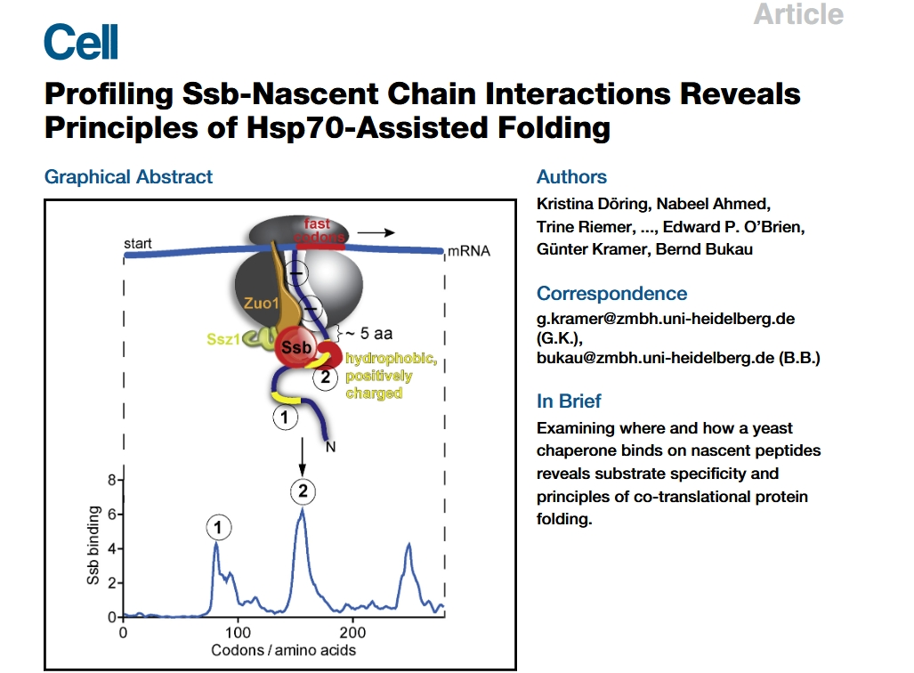
18.2 Metagene profiles
Figure 1B of the study shows that in cells expressing either Ssb1-GFP or Ssb2-GFP, the metagene translatome exhibits a typical accumulation of ribosome footprints near the start codon, reflecting slow translation initiation, followed by a nearly uniform distribution across the first 500 codons. The Ssb1- and Ssb2-bound translatomes are highly similar to each other but differ from the total translatome. Specifically, the mean read density in Ssb-bound translatomes is low within the first 50 codons and then reaches a stable plateau, indicating that Ssb begins to engage nascent chains on average after ~50 amino acids have been synthesized. Since 25–30 residues are still inside the ribosome during translation, this suggests that Ssb starts interacting with nascent chains when approximately 20 amino acids are exposed outside the ribosome:
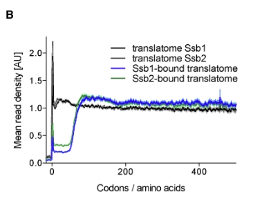
We use the metagene_plot function to visualize ribosome density in the region from -50 to 1500 nucleotidesrelative to the start codon), with codon as the unit:
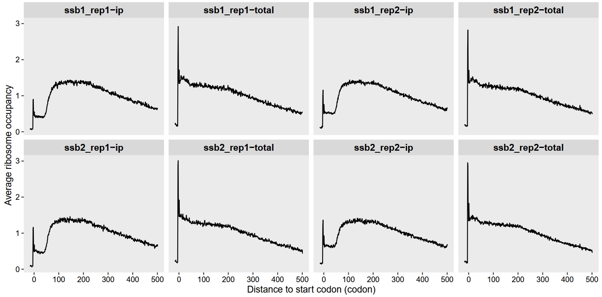
Alternatively, we can extract the data ourselves for customized plotting:
mt <- metagene_plot(object = obj,
mode = "codon",
rel2st_dist = c(-50, 1500),
return_data = T)
# check
head(mt)
# # A tibble: 6 × 3
# sample rel avg
# <chr> <dbl> <dbl>
# 1 ssb1_rep1-ip -16 0.0627
# 2 ssb1_rep1-ip -15 0.0829
# 3 ssb1_rep1-ip -14 0.0842
# 4 ssb1_rep1-ip -13 0.0878
# 5 ssb1_rep1-ip -12 0.0805
# 6 ssb1_rep1-ip -11 0.0578We can also visualize the data by grouping biological replicates and separately plotting the total and IP samples:
# add groups
mt$gp <- sapply(strsplit(mt$sample,split = "_"),"[",1)
mt$tp <- sapply(strsplit(mt$sample,split = "-"),"[",2)
mt$rep <- sapply(strsplit(mt$sample,split = "_|-"),"[",2)
# plot
ggplot(mt) +
geom_line(aes(x = rel,y = avg,colour = sample)) +
facet_grid(rep~gp) +
theme_bw() +
theme(axis.text = element_text(colour = "black"),
panel.grid = element_blank(),
strip.text = element_text(face = "bold",size = rel(1))) +
xlab("Codons / amino acids") +
ylab("Mean read density [AU]")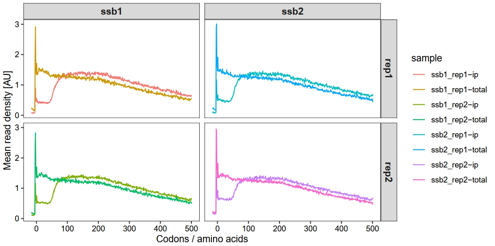
18.3 Single gene enrichment profile
The article demonstrates that the proteins PMT1, CDC37, and CCT3 are among the nascent chains bound by Ssb, as shown in Figure 1:
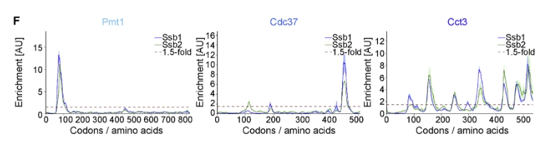
我们批量绘制这3个基因的enrichment的track图：
glist <- c("PMT1", "CDC37", "CCT3")
# x = 1
lapply(seq_along(glist), function(x){
obj <- get_occupancy(object = obj,
serp_exp = "total",
gene_name = glist[x],
coordinate_to_trans = T,
do_reads_offset = T)
obj <- get_occupancy(object = obj,
serp_exp = "ip",
gene_name = glist[x],
coordinate_to_trans = T,
do_reads_offset = T)
p <-
enrichment_plot2(object = obj,
smooth = TRUE,
window_size = 15,
mode = "codon",
merge_rep = T,
facet = ggplot2::facet_grid(~rname))
return(p)
}) -> plist
# combine
cowplot::plot_grid(plotlist = plist, nrow = 2)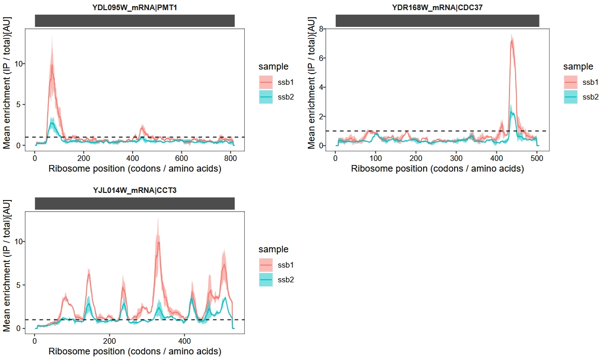
Gene-by-gene inspection revealed that the small discrepancy in substrate pools is largely due to subtle differences in enrichment factors that affect bioinformatic detection:
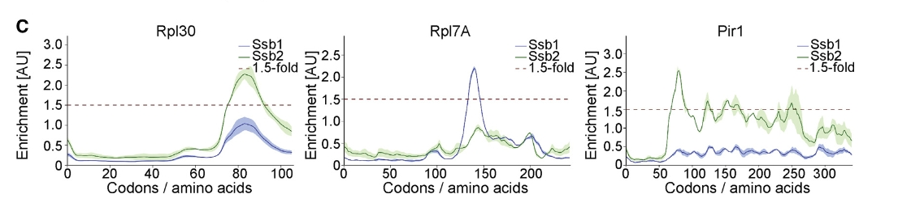
glist <- c("RPL30", "RPL7A", "PIR1")
# x = 1
lapply(seq_along(glist), function(x){
obj <- get_occupancy(object = obj,
serp_exp = "total",
gene_name = glist[x],
coordinate_to_trans = T,
do_reads_offset = T)
obj <- get_occupancy(object = obj,
serp_exp = "ip",
gene_name = glist[x],
coordinate_to_trans = T,
do_reads_offset = T)
p <-
enrichment_plot2(object = obj,
smooth = TRUE,
window_size = 15,
mode = "codon",
merge_rep = T,
facet = ggplot2::facet_grid(~rname))
return(p)
}) -> plist
# combine
cowplot::plot_grid(plotlist = plist, nrow = 2)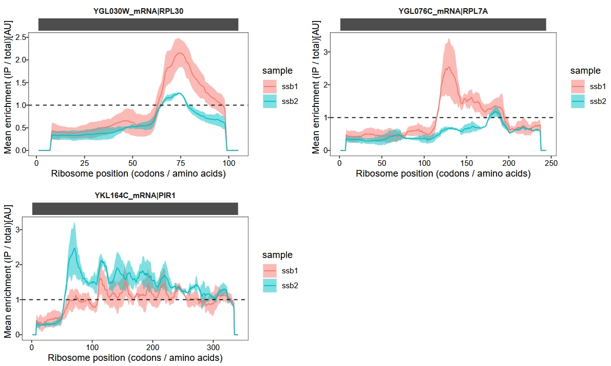
18.4 Ssb targeted proteins metagene profile
Figure 3B presents metagene binding profiles that characterize how the chaperone protein Ssb interacts with nascent polypeptide chains based on their subcellular localization — specifically, cytoplasmic/nuclear, mitochondrial, and ER-targeted proteins:
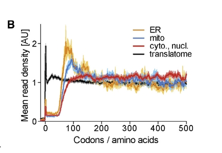
18.4.1 Download protein category data
First, we download the gene classification data provided in the article from the following link:
https://www.cell.com/cms/10.1016/j.cell.2017.06.038/attachment/24190c7e-ed24-4329-9349-fe9c72386983/mmc1.xlsx
Then, we import and examine the content of the “protein categories” sheet using the readxl package, skipping the first 14 rows which contain metadata or descriptions:
pc <- readxl::read_xlsx("../mmc1.xlsx",sheet = "protein categories",
skip = 14)
# check
head(pc)
# # A tibble: 6 × 11
# cytoplasmic, nuclear …¹ mitochondrial protei…² `ER-targeted proteins` SRP-dependent protei…³ SRP-independent prot…⁴
# <chr> <chr> <chr> <chr> <chr>
# 1 YPL191C YNL003C YPL051W YMR058W YJL052C-A
# 2 YJL179W YIL124W YBL102W YHR138C YNL238W
# 3 YNL288W YKL029C YIL048W YJR116W YDR246W-A
# 4 YPL144W YNR045W YPL195W YFR035C YPL189W
# 5 YHR112C YNR018W YGL223C YML132W YLR120C
# 6 YKR084C YKR064W YDR137W YJL127C-B YMR305C
# # ℹ abbreviated names: ¹`cytoplasmic, nuclear proteins`, ²`mitochondrial proteins`, ³`SRP-dependent proteins`,
# # ⁴`SRP-independent proteins`
# # ℹ 6 more variables: `SND-pathway proteins (used for Fig. 3A)` <chr>,
# # `SND-pathway proteins (used for Fig. S3F)` <chr>, `Tail-anchored proteins` <chr>,
# # `unclassified ER-targeted proteins` <chr>, `SRP substrates (with distinct peak)` <chr>,
# # `SRP substrates (pre-recruitment)` <chr>18.4.2 Calculation and visualization
Then calculate and process the gene names for each gene category:
# choose ssb1 for analysis
obj2 <- subset_data(object = obj, sample %in% c("ssb1_rep1", "ssb1_rep2"))
# gene features
ft <- obj2@features
# get gene list
cyto_nuc <- ft %>%
dplyr::filter(transcript_id %in% paste(pc$`cytoplasmic, nuclear proteins`,"_mRNA",sep = ""))
mito <- ft %>%
dplyr::filter(transcript_id %in% paste(pc$`mitochondrial proteins`,"_mRNA",sep = ""))
er <- ft %>%
dplyr::filter(transcript_id %in% paste(pc$`ER-targeted proteins`,"_mRNA",sep = ""))
tranlatome <- ft
# groups
gp <- c("cyto_nuc", "mito", "ER", "translatome")
glist <- list(cyto_nuc$gene, mito$gene, er$gene, tranlatome$gene)Finally, calculate and plot the metagene profile data for genes of different categories:
# loop get data
# x = 1
lapply(seq_along(gp), function(x){
mt <- metagene_plot(object = obj2,
selected_genes = glist[[x]],
mode = "codon",
rel2st_dist = c(-50, 1500),
return_data = T)
mt$group <- gp[x]
mt$tp <- sapply(strsplit(mt$sample,split = "-"),"[",2)
if(gp[x] == "translatome"){
mt <- subset(mt, tp == "total")
}else{
mt <- subset(mt, tp == "ip")
}
return(mt)
}) %>% do.call("rbind",.) %>% data.frame() -> mts
# plot
# add groups
mts$gp <- sapply(strsplit(mts$sample,split = "_"),"[",1)
mts$rep <- sapply(strsplit(mts$sample,split = "_|-"),"[",2)
# plot
ggplot(mts) +
geom_line(aes(x = rel,y = avg,colour = group)) +
facet_grid(rep~gp) +
theme_bw() +
theme(axis.text = element_text(colour = "black"),
panel.grid = element_blank(),
strip.text = element_text(face = "bold",size = rel(1))) +
xlab("Codons / amino acids") +
ylab("Mean read density [AU]") +
scale_color_brewer(palette = "Set2")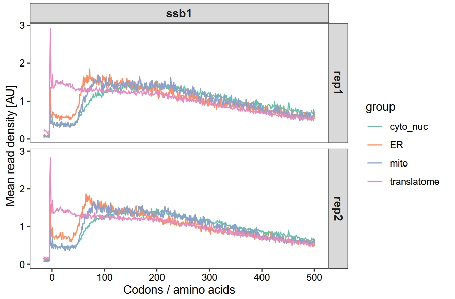
18.5 Impact of RAC on co-translational ssb function
By integrating ribosome profiling data with enrichment analysis and motif identification, the study maps Ssb interactions with high resolution and reveals its coordination with translation elongation and nascent chain folding. This provides a comprehensive understanding of Ssb’s role as a chaperone in co-translational protein folding:
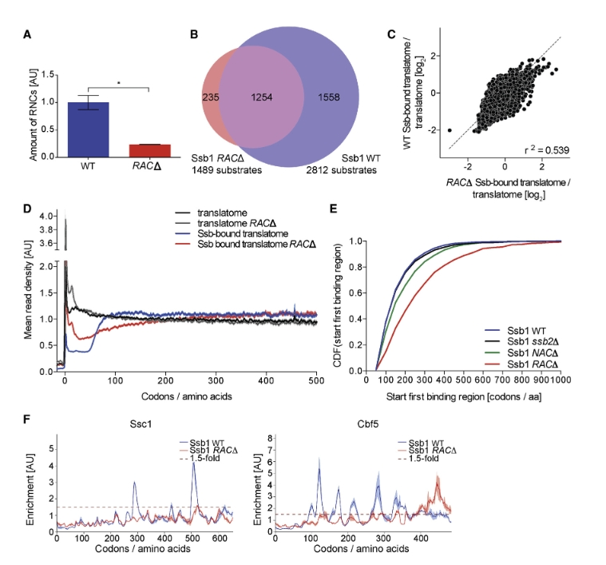
18.5.1 Serp object construction
We reconstructed the relevant samples into SeRP objects for subsequent analyses:
# total bamfiles
tt.bam <- c("WT_Ssb1-GFP_translatome_rep1.bam",
"WT_Ssb1-GFP_translatome_rep2.bam",
"WT_Ssb2-GFP_translatome_rep1.bam",
"WT_Ssb2-GFP_translatome_rep2.bam",
"RAC_Ssb1-GFP_translatome_rep1.bam",
"RAC_Ssb1-GFP_translatome_rep2.bam",
"RAC_Ssb2-GFP_translatome_rep1.bam",
"RAC_Ssb2-GFP_translatome_rep2.bam",
"NAC_Ssb1-GFP_translatome_rep1.bam",
"NAC_Ssb1-GFP_translatome_rep2.bam",
"NAC_Ssb2-GFP_translatome_rep1.bam",
"NAC_Ssb2-GFP_translatome_rep2.bam")
# interactome bam files
ip.bam <- c("WT_Ssb1_interactome_rep1.bam",
"WT_Ssb1_interactome_rep2.bam",
"WT_Ssb2_interactome_rep1.bam",
"WT_Ssb2_interactome_rep2.bam",
"RAC_Ssb1_interactome_rep1.bam",
"RAC_Ssb1_interactome_rep2.bam",
"RAC_Ssb2_interactome_rep1.bam",
"RAC_Ssb2_interactome_rep2.bam",
"NAC_Ssb1_interactome_rep1.bam",
"NAC_Ssb1_interactome_rep2.bam",
"NAC_Ssb2_interactome_rep1.bam",
"NAC_Ssb2_interactome_rep2.bam")
# construct_serp
obj <- construct_serp(genome_file = "../../index-data/Saccharomyces_cerevisiae.R64-1-1.dna.toplevel.fa",
gtf_file = "../../index-data/Saccharomyces_cerevisiae.R64-1-1.112.gtf",
mapping_type = "genome",
assignment_mode = "end5",
extend = TRUE,
extend_upstream = 50,
extend_downstream = 50,
total_bam_file = tt.bam,
total_sample_name = c("Ssb1_rep1","Ssb1_rep2",
"Ssb2_rep1","Ssb2_rep2",
"RAC_Ssb1_rep1","RAC_Ssb1_rep2",
"RAC_Ssb2_rep1","RAC_Ssb2_rep2",
"NAC_Ssb1_rep1","NAC_Ssb1_rep2",
"NAC_Ssb2_rep1","NAC_Ssb2_rep2"),
total_sample_group = c("Ssb1","Ssb1","Ssb2","Ssb2",
"RAC_Ssb1","RAC_Ssb1","RAC_Ssb2","RAC_Ssb2",
"NAC_Ssb1","NAC_Ssb1","NAC_Ssb2","NAC_Ssb2"),
IP_bam_file = ip.bam,
IP_sample_name = c("Ssb1_rep1","Ssb1_rep2",
"Ssb2_rep1","Ssb2_rep2",
"RAC_Ssb1_rep1","RAC_Ssb1_rep2",
"RAC_Ssb2_rep1","RAC_Ssb2_rep2",
"NAC_Ssb1_rep1","NAC_Ssb1_rep2",
"NAC_Ssb2_rep1","NAC_Ssb2_rep2"),
IP_sample_group = c("Ssb1","Ssb1","Ssb2","Ssb2",
"RAC_Ssb1","RAC_Ssb1","RAC_Ssb2","RAC_Ssb2",
"NAC_Ssb1","NAC_Ssb1","NAC_Ssb2","NAC_Ssb2"),
choose_longest_trans = T)
# generate summary data for QC or other analysis
obj <- generate_summary(object = obj,
exp_type = c("total","ip"),
nThreads = 60)18.5.2 Adding offset information
# offset correction
sp <- c("Ssb1_rep1","Ssb1_rep2",
"Ssb2_rep1","Ssb2_rep2",
"RAC_Ssb1_rep1","RAC_Ssb1_rep2",
"RAC_Ssb2_rep1","RAC_Ssb2_rep2",
"NAC_Ssb1_rep1","NAC_Ssb1_rep2",
"NAC_Ssb2_rep1","NAC_Ssb2_rep2")
offset <- data.frame(sample = rep(c(paste(sp,"total",sep = "-"),paste(sp,"ip",sep = "-")),
each = 16),
qwidth = rep(20:35,24),
rel_pos = rep(c(rep(15,11),rep(16,5)),24))
obj@reads_offset_info <- offset18.5.3 Metagene profile for RAC depletion
Use the subset_data function to filter and analyze samples with Ssb and RAC deletions:
# ==============================================================================
# choose RAC and ssb for analysis
obj2 <- subset_data(object = obj, sample_group %in% c("Ssb1", "Ssb2", "RAC_Ssb1","RAC_Ssb2"))
mt <- metagene_plot(object = obj2,
mode = "codon",
rel2st_dist = c(-50, 1500),
return_data = T)
# add groups
mt$gp <- sapply(strsplit(mt$sample,split = "_"),"[",1)
mt$tp <- sapply(strsplit(mt$sample,split = "-"),"[",2)
mt <- mt %>%
dplyr::mutate(rep = dplyr::case_when(startsWith(sample, "Ssb") ~ sapply(strsplit(sample,split = "_|-"),"[",2),
!startsWith(sample, "Ssb") ~ sapply(strsplit(sample,split = "_|-"),"[",3),
)) %>%
dplyr::mutate(ft = dplyr::case_when(startsWith(sample, "Ssb") ~ sapply(strsplit(sample,split = "_"),"[",1),
!startsWith(sample, "Ssb") ~ sapply(strsplit(sample,split = "_"),"[",2),
))
# plot
ggplot(mt) +
geom_line(aes(x = rel,y = avg,colour = sample)) +
facet_grid(ft~rep) +
theme_bw() +
theme(axis.text = element_text(colour = "black"),
panel.grid = element_blank(),
strip.text = element_text(face = "bold",size = rel(1))) +
xlab("Codons / amino acids") +
ylab("Mean read density [AU]") +
guides(color = guide_legend(ncol = 2))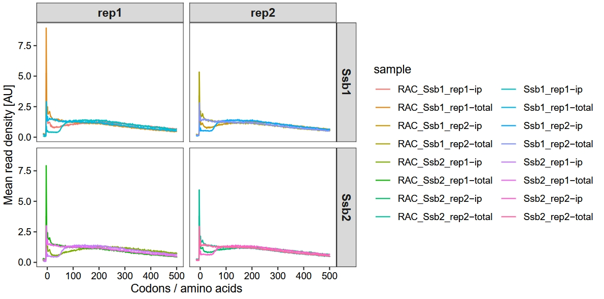
18.5.4 Ssb1 interaction profiles for exemplary proteins
The authors presented the interaction profiles of Ssb1 for the exemplary genes ssc1 and cbf5. They observed that the deletion of RAC significantly influenced the co-translational binding dynamics of Ssb, leading to altered binding distributions and a notable delay in its engagement with nascent chains. To showcase these effects and deepen our understanding, we extracted the data to visualize the binding profiles of Ssb1 and Ssb2 in the context of RAC deletion:
glist <- c("SSC1", "CBF5")
# x = 1
lapply(seq_along(glist), function(x){
obj2 <- get_occupancy(object = obj2,
serp_exp = "total",
gene_name = glist[x],
coordinate_to_trans = T,
do_reads_offset = T)
obj2 <- get_occupancy(object = obj2,
serp_exp = "ip",
gene_name = glist[x],
coordinate_to_trans = T,
do_reads_offset = T)
pdf <-
enrichment_plot2(object = obj2,
smooth = TRUE,
window_size = 15,
mode = "codon",
merge_rep = T,
facet = ggplot2::facet_grid(~rname),
return_data = T)
return(pdf)
}) %>% do.call("rbind",.) %>% data.frame() -> pdf
# re-plot
pdf$gp <- sapply(strsplit(pdf$sample,split = "_"),"[",2)
pdf <- pdf %>%
dplyr::mutate(gp = ifelse(is.na(gp), sample, gp))
# check
# head(pdf)
# sample rname pos rpm.x rpm.y sm1 sm2 sd smratio gp
# 1 RAC_Ssb1 YJR045C_mRNA|SSC1 1 0.8387263 0.5019538 0 0 0 0 Ssb1
# 2 RAC_Ssb1 YJR045C_mRNA|SSC1 2 0.6155070 0.3005195 0 0 0 0 Ssb1
# 3 RAC_Ssb1 YJR045C_mRNA|SSC1 3 0.2795754 0.1721372 0 0 0 0 Ssb1
# 4 RAC_Ssb1 YJR045C_mRNA|SSC1 4 0.2795754 0.2426880 0 0 0 0 Ssb1
# 5 RAC_Ssb1 YJR045C_mRNA|SSC1 5 0.5012232 0.2881815 0 0 0 0 Ssb1
# 6 RAC_Ssb1 YJR045C_mRNA|SSC1 6 1.3352958 0.6264777 0 0 0 0 Ssb1plotting data:
# plot
ggplot(pdf) +
geom_ribbon(aes(ymin = smratio - sd,
ymax = smratio + sd,
x = pos,y = smratio,
fill = sample), alpha = 0.5) +
geom_line(aes(x = pos,y = smratio, color = sample)) +
geom_hline(yintercept = 1,lty = "dashed",color = "black") +
facet_grid(gp~rname,scales = "free") +
theme_bw() +
theme(panel.grid = element_blank(),
axis.text = element_text(colour = "black"),
strip.text.y.left = element_text(angle = 0, hjust = 1),
strip.background = element_blank(),
strip.text = element_text(face = "bold"),
strip.placement = "outside",
ggside.panel.background = element_blank(),
ggside.panel.border = element_blank()) +
xlab("Ribosome position (codons / amino acids)") +
ylab("Mean enrichment (IP / total)[AU]") +
scale_color_brewer(palette = "Set2") +
scale_fill_brewer(palette = "Set2")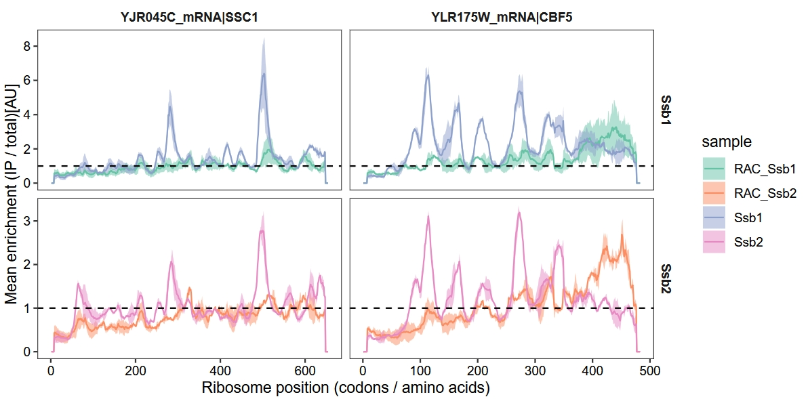
18.6 Interplay of ssb and NAC
These findings in figure 6 demonstrate that NAC synergistically promotes broader Ssb binding to nascent chains by increasing the number and intensity of Ssb-binding events. However, the absence of NAC does not alter Ssb’s substrate selectivity or the positional characteristics of its binding sites:
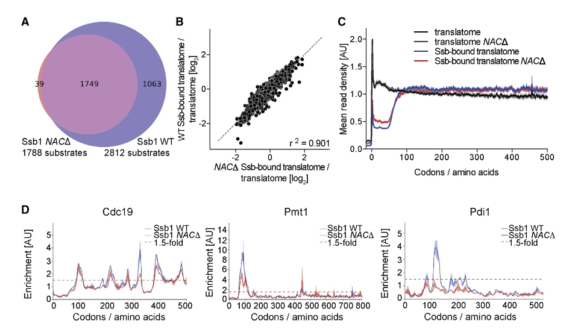
18.6.1 Metagene profile for NAC depletion
Filter NAC samples, with the analysis workflow similar to the above:
# ==============================================================================
# choose NAC and ssb for analysis
obj3 <- subset_data(object = obj, sample_group %in% c("Ssb1", "Ssb2", "NAC_Ssb1","NAC_Ssb2"))
mt <- metagene_plot(object = obj3,
mode = "codon",
rel2st_dist = c(-50, 1500),
return_data = T)
# add groups
mt$gp <- sapply(strsplit(mt$sample,split = "_"),"[",1)
mt$tp <- sapply(strsplit(mt$sample,split = "-"),"[",2)
mt <- mt %>%
dplyr::mutate(rep = dplyr::case_when(startsWith(sample, "Ssb") ~ sapply(strsplit(sample,split = "_|-"),"[",2),
!startsWith(sample, "Ssb") ~ sapply(strsplit(sample,split = "_|-"),"[",3),
)) %>%
dplyr::mutate(ft = dplyr::case_when(startsWith(sample, "Ssb") ~ sapply(strsplit(sample,split = "_"),"[",1),
!startsWith(sample, "Ssb") ~ sapply(strsplit(sample,split = "_"),"[",2),
))
# plot
ggplot(mt) +
geom_line(aes(x = rel,y = avg,colour = sample)) +
facet_grid(ft~rep) +
theme_bw() +
theme(axis.text = element_text(colour = "black"),
panel.grid = element_blank(),
strip.text = element_text(face = "bold",size = rel(1))) +
xlab("Codons / amino acids") +
ylab("Mean read density [AU]") +
guides(color = guide_legend(ncol = 2))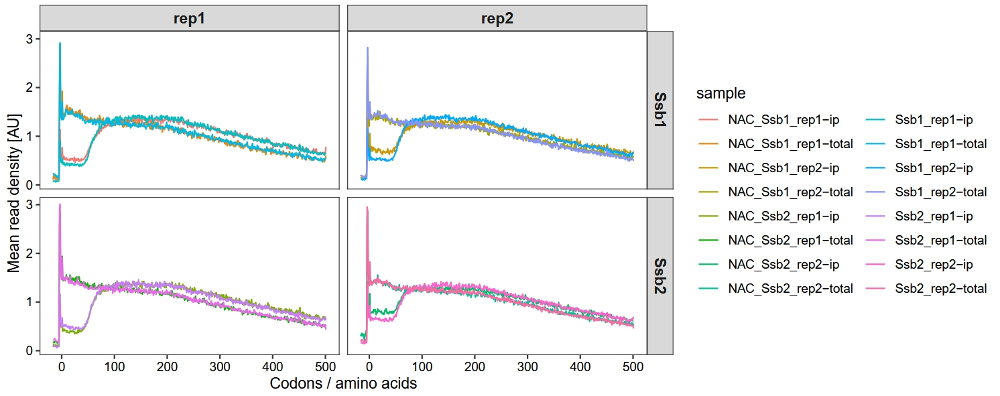
18.6.2 Ssb1 interaction profiles
# ==============================================================================
glist <- c("CDC19", "PMT1", "PDI1")
# x = 1
lapply(seq_along(glist), function(x){
obj3 <- get_occupancy(object = obj3,
serp_exp = "total",
gene_name = glist[x],
coordinate_to_trans = T,
do_reads_offset = T)
obj3 <- get_occupancy(object = obj3,
serp_exp = "ip",
gene_name = glist[x],
coordinate_to_trans = T,
do_reads_offset = T)
pdf <-
enrichment_plot2(object = obj3,
smooth = TRUE,
window_size = 15,
mode = "codon",
merge_rep = T,
facet = ggplot2::facet_grid(~rname),
return_data = T)
return(pdf)
}) %>% do.call("rbind",.) %>% data.frame() -> pdf
# re-plot
pdf$gp <- sapply(strsplit(pdf$sample,split = "_"),"[",2)
pdf <- pdf %>%
dplyr::mutate(gp = ifelse(is.na(gp), sample, gp))
# plot
ggplot(pdf) +
geom_ribbon(aes(ymin = smratio - sd,
ymax = smratio + sd,
x = pos,y = smratio,
fill = sample), alpha = 0.5) +
geom_line(aes(x = pos,y = smratio, color = sample)) +
geom_hline(yintercept = 1,lty = "dashed",color = "black") +
facet_grid(gp~rname,scales = "free") +
theme_bw() +
theme(panel.grid = element_blank(),
axis.text = element_text(colour = "black"),
strip.text.y.left = element_text(angle = 0, hjust = 1),
strip.background = element_blank(),
strip.text = element_text(face = "bold"),
strip.placement = "outside",
ggside.panel.background = element_blank(),
ggside.panel.border = element_blank()) +
xlab("Ribosome position (codons / amino acids)") +
ylab("Mean enrichment (IP / total)[AU]") +
scale_color_brewer(palette = "Set2") +
scale_fill_brewer(palette = "Set2")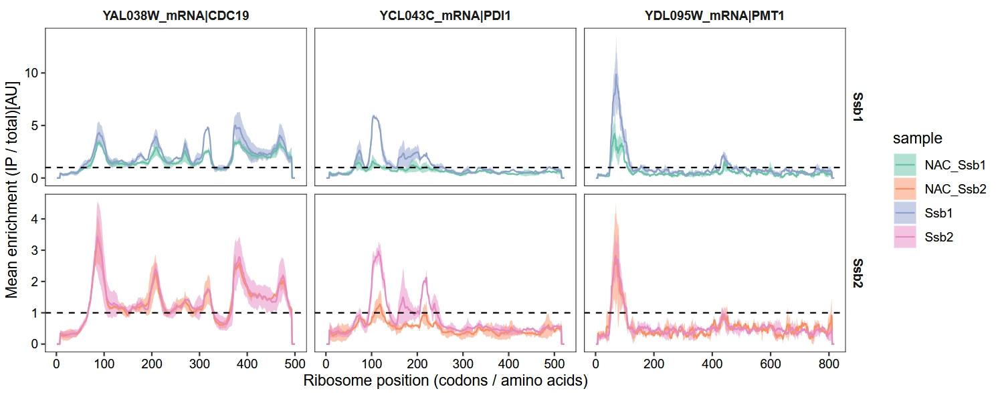